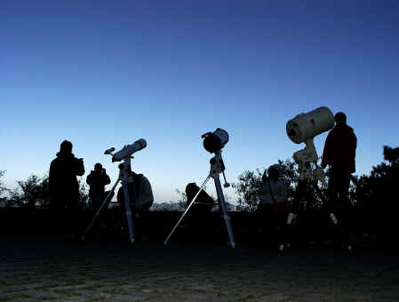

ˉˉˉ１.松山高中天文研究社blogˉˉˉhttp://www.wretch.cc/album/ssarc
ˉˉˉ２.合歡山的星空-張君宏ˉˉˉhttp://tw.myblog.yahoo.com/hiroshie
ˉˉˉ３.維基百科ˉˉˉhttp://zh.wikipedia.org/w/index.php?title=Wikipedia:%E9%A6%96%E9%A1%B5&variant=zh-tw
如有冒犯，敬請見諒
